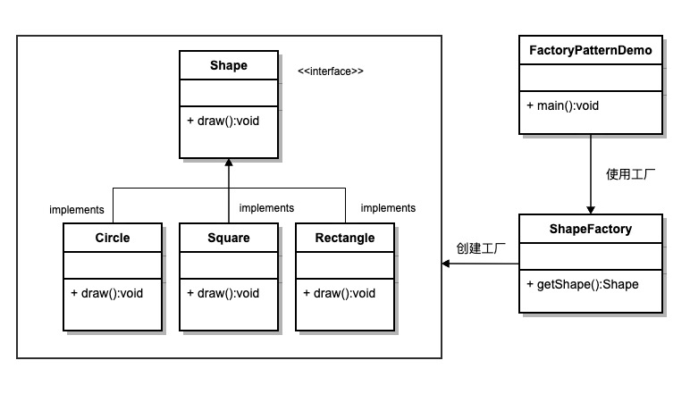

Factory Pattern
Factory Pattern is one of the most commonly used design patterns in Java. It provides a way to create objects, separating the process of creating objects from the process of using objects.
The Factory Pattern provides a way to create objects without specifying the concrete class to be created.
By using the factory pattern, the object creation logic can be encapsulated within a factory class rather than instantiating objects directly in client code, which improves code maintainability and extensibility.
Types of Factory Pattern
1. Simple Factory Pattern：
- The Simple Factory Pattern is not a formal design pattern, but it is the foundation of the Factory Pattern. It uses a single factory class to create different objects, determining which type of object to create based on the parameters passed in.
2. Factory Method Pattern：
- The Factory Method pattern defines an interface for creating objects, but lets subclasses decide which class to instantiate. It defers object creation to subclasses.
3. Abstract Factory Pattern：
- The Abstract Factory pattern provides an interface for creating a family of related or interdependent objects without specifying their concrete classes.
summary
intent
Define an interface for creating objects, and let subclasses decide which concrete class to instantiate. The factory pattern defers the object creation process to subclasses.
Mainly Solves
The issue of interface selection.
When to Use
When we need to create different instances under different conditions.
How to Solve
By having subclasses implement the factory interface, an abstract product is returned.
Key code
The object creation process is implemented in subclasses.
Application example
- Automobile Manufacturing: You need a car; you just pick it up from the factory, without needing to care about the manufacturing process and internal implementation of the car.
- HibernateWhen switching databases, you only need to change the Dialect and the database Driver to switch between different databases.
Advantages
- The caller only needs to know the name of the object to create it.
- High extensibility: if a new product needs to be added, you only need to extend a factory class.
- The specific implementation of the product is hidden; the caller only cares about the product interface.
Disadvantages
Each time a product is added, a concrete class and a corresponding factory need to be added, causing the number of classes in the system to multiply, increasing the system's complexity and dependency on concrete classes.
Use Case
- Logging: Logs may be recorded to a local hard disk, system events, remote servers, etc. Users can choose where to record the logs.
- Database access: When the user does not know which database the final system will use, or when the database may change.
- Framework design for connecting to a server.: It is necessary to support three protocols: "POP3", "IMAP", "HTTP". These three protocols can be used as product classes that together implement an interface.
Notes
The Factory Pattern is suitable for scenarios where complex objects are generated. If the object is relatively simple and can be created with `new`, there is no need to use the Factory Pattern. Using the Factory Pattern introduces a factory class and increases system complexity.
Structure
The Factory Pattern includes the following main roles:
- Abstract Product: Defines the common interface or abstract class of the product. It can be the parent class or interface of concrete product classes, specifying the common methods of product objects.
- Concrete Product: Implements the abstract product interface, defining the specific behavior and properties of a concrete product.
- Abstract Factory: Declares abstract methods for creating products; it can be an interface or an abstract class. It can have multiple methods for creating different types of products.
- Concrete Factory: Implements the abstract factory interface and is responsible for actually creating concrete product objects.
Implementation
We will create aShapeInterface and implementationShapeThe entity class of the interface. The next step is to define the factory class.ShapeFactory。
FactoryPatternDemoClass usageShapeFactoryTo obtainShapeobject. It willShapeFactoryPass Information (CIRCLE / RECTANGLE / SQUARE), in order to obtain the type of object it needs.

Step 1
create an interface:
Shape.java
Step 2
Create concrete classes that implement the interface.
Rectangle.java
Square.java
Circle.java
Step 3
Create a factory that generates objects of entity classes based on given information.
ShapeFactory.java
Step 4
Use this factory to obtain objects of entity classes by passing type information.
FactoryPatternDemo.java
Step 5
Run the program, output result:
Inside Circle::draw() method. Inside Rectangle::draw() method. Inside Square::draw() method.
Other related articles
other extensions